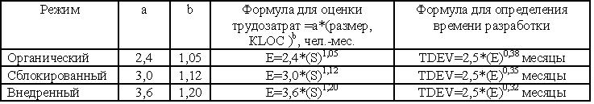
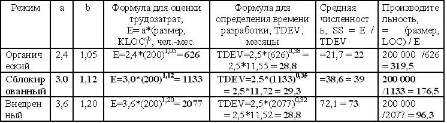
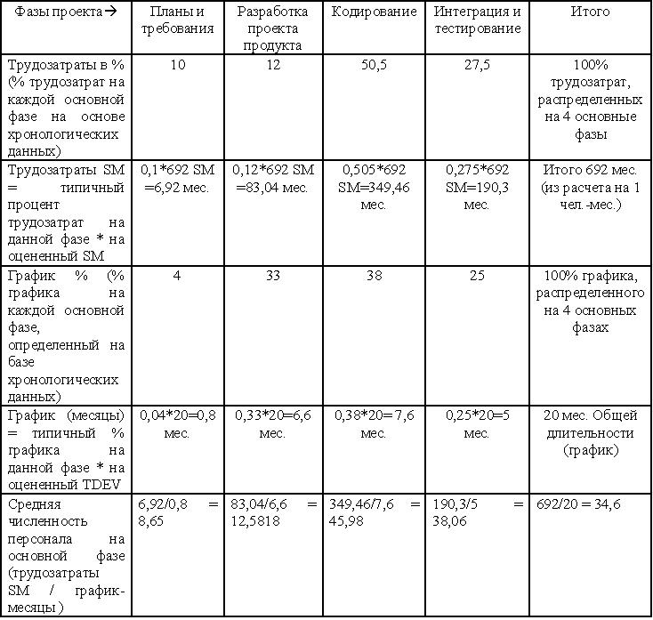

Базовая модель СОСОМО
Оценка трудозатрат
Показатель KLOC касается исключительно входной переменной.

Рисунок 17.2 - Базовые формулы оценки необходимых для разработки времени и трудозатрат в модели СОСОМО
Трудозатраты измеряются в человеко - месяцах (19 дней в месяце либо 152 рабочих часа в месяце, константы а и b могут определяться с помощью процедуры построения кривой по точкам (регрессионный анализ), причем данные проекта сравниваются с помощью уравнения. Большинство организаций не располагают массивом данных, достаточным для выполнения подобного анализа, начиная с применения дерева уровней.
В случае использования различных режимов проекты одинакового масштаба требуют различных трудозатрат.
Трудозатраты - Е, Время разработки - TDEV, Средняя численность персонала - SS.
SS = Е / TDEV
Пример 3.
Пусть размер проекта 200 КLOC из таблицы рис.17.1 размер средний, режим сблокированный. Заполним таблицу на рис.17.3.

Рисунок 17.3 - Разработка времени и трудозатрат в модели СОСОМО для проекта 200 КLOC
Фаза распределения трудозатрат и пунктов графика в базовой модели СОСОМО
В дополнение к оценке графика и трудозатрат во время разработки программного проекта, зачастую требуется оценить, каким образом трудозатраты распределяются среди действий первичного жизненного цикла. При использовании модели СОСОМО обеспечивается упрощенный подход к применению фаз жизненного цикла. При реализации этого подхода учитываются только планы и требования, разработка проекта продукта, кодирование, а также интеграция и тестирование в качестве четырех фаз разработки. Фаза поддержки рассматривается в качестве финальной фазы жизненного цикла. Каждое из упомянутых действий может выполняться на протяжении любой из перечисленных ниже фаз: анализ требований, разработка проекта продукта, кодирование, планирование тестирования, проверка, офисные функции проекта, управление конфигурацией и обеспечение качества, документирование и т.д.
А теперь будет рассмотрен пример фазы распределения трудозатрат и пунктов графика (таблица рис.17.4).
Предположим, что размер проекта, выполняемого во внедренном режиме, составляет 80 KLOC.
Е (трудозатраты, чел.-месяцы) = 3,6*(KLOC) 1,2 = 3,6*(80)1,2° = 3,6*(192,18) = 692 чел.-месяца TDEV (время разработки) = 2,5*(E)0,32 = 2,5 (692) 0,32 = 2,5*(8,106) = 20 месяцев.

Рисунок 17.4 - Пример фазы распределения трудозатрат и пунктов графика